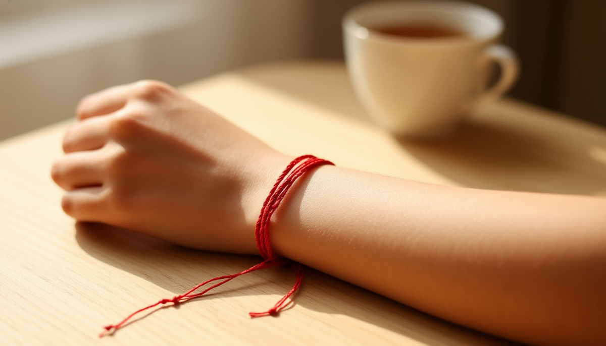

Браслет — единственный подарок, который человек носит на руке каждый день. И почти никто не задумывается, что этот браслет говорит о вас всякому, кто его видит.
Разберёмся, что означает браслет в подарок, кому его можно дарить и почему в некоторых культурах он читается громче, чем кольцо.
Почему браслет — недооценённый символ
Кольцо обсуждают все. Про кольцо пишут статьи, снимают видео, спорят в комментариях. А браслет остаётся в тени. И совершенно незаслуженно.
Браслет — это украшение, которое носится на руке. А рука в символике почти всех культур — это действие. Рукой мы делаем, держим, обнимаем, защищаем. Поэтому всё, что на руке, читается как «то, что связано с действием».
Браслет, надетый на руку, говорит: «я с тобой в действии». Не в словах, не в мыслях — а в том, что делаю. Именно поэтому браслеты с древности были не просто украшением, а знаком связи между людьми.
Откуда пошла традиция
Браслет — одно из самых древних украшений. Его носили ещё в Древнем Египте, за несколько тысяч лет до нашей эры. И почти всегда это было не про красоту — а про защиту.
В Древнем Египте браслеты делали из кожи, камня, металла. Считалось, что они отгоняют злых духов и приносят удачу. Особенно если носить их на правой руке.
В Древней Греции и Риме браслеты носили воины. Это был знак доблести. Иногда — знак принадлежности к определённому легиону или роду.
В Древней Руси браслеты (их называли «обручи» или «зарукавья») носили и мужчины, и женщины. Это был оберег. Считалось, что браслет защищает от сглаза и болезней, а также «держит» силу человека внутри него.
Что это значит для нас? Когда вы дарите браслет, вы передаёте не просто украшение. Вы передаёте знак защиты. И если получатель знает традицию — он это почувствует.
Что означает браслет как подарок
Значение зависит от того, кто дарит и кому. Разберём основные сочетания.
От мужчины женщине. Браслет — знак того, что он её видит, ценит, хочет быть рядом. Если браслет с замком или цепочкой — это может читаться как «хочу быть ближе». Если с подвеской — это послание.
От женщины мужчине. Браслет — редкость. Мужские браслеты носят немногие. Но если дарите — это знак особого уважения. «Я вижу тебя не как всех».
От подруги подруге. Браслет — знак дружбы. Особенно парные браслеты: «мы вместе». Часто дарят на память о совместном событии.
От родителей ребёнку. Браслет — оберег. Особенно если с именем, датой рождения, камнем-талисманом. Это традиция, которая возвращается.
От человека человеку «на удачу». Браслет — талисман. Особенно красная нить. Это подарок, который говорит: «я хочу, чтобы у тебя всё было хорошо».
Виды браслетов и их символика
Красная нить. Самый сильный символ в современной культуре. Красная нить на левом запястье — защита от сглаза. Особенно если её завязал близкий человек с добрыми мыслями.
Металлический браслет. Классика. Серебро — чистота, золото — ценность, сталь — сила. Хороший подарок для того, кто носит украшения постоянно.
Кожаный браслет. Символ свободы и простоты. Часто носят мужчины. Хорошо подходит для подарка человеку, который не любит «блестящее».
Браслет с камнем. Камень имеет своё значение. Аметист — спокойствие. Кварц — энергия. Обсидиан — защита. Если знаете значение камня — это усилит подарок.
Парные браслеты. Символ связи. Дарят влюблённые, друзья, близкие. «Мы вместе, и это видно».
Кому дарить браслет
Девушке или жене. Один из самых уместных подарков. Особенно с гравировкой, с камнем, с датой. Работает на любые отношения — от первых свиданий до годовщин.
Подруге. Хороший вариант, особенно парные. Или тематические — например, с её знаком зодиака.
Маме или бабушке. Тонкий браслет с камнем или гравировкой. Не «молодёжный», а спокойный, классический.
Ребёнку. Оберег. Можно с именем, с датой рождения, с камнем-талисманом. Особенно если ребёнок идёт в школу или в новую жизнь.
Мужчине. Сложнее, но можно. Кожаный, металлический, минималистичный. Главное — не «женственный» по стилю.
Коллеге или знакомой. Если отношения позволяют — тонкий браслет нейтрального дизайна. Без романтических намёков.
Приметы, связанные с браслетом
Браслет — не такой «запретный» подарок, как нож или часы. Но и здесь есть свои нюансы.
Не дарите браслет, который не подходит по размеру. Считается, что «сдавливающий» браслет — к несвободе. Лучше выбирать с возможностью регулировки.
Если браслет порвался или сломался — считается, что он забрал беду. Не расстраивайтесь. Замените — но не торопитесь.
Красную нить нельзя покупать себе. Её должен завязать близкий человек с добрыми мыслями. Это не суеверие, а традиция, которая живёт до сих пор.
Парные браслеты нельзя дарить «на пробу». Считается, что если отношения не сложатся — браслет «разорвёт» их сам. Хорошо это или плохо — зависит от ситуации.
Что сказать, когда вручаете
Браслет требует объяснения. Без слов он может прочитаться как «просто украшение». С фразой — становится посланием.
«Этот браслет — чтобы ты всегда помнила, что я рядом».
«Это оберег. Носи его, когда тебе нужно поддержка».
«Это парный. Один — твой, один — мой».
«Это просто красиво. Но красиво — потому что ты».
Одна фраза — и браслет перестаёт быть украшением. Он становится знаком.

В итоге
Браслет носят на руке. Рукой мы делаем всё — обнимаем, пишем, держим, защищаем. И браслет всё время рядом. Не в шкатулке, не «на особый случай», а здесь. Каждый день.
И в этом его сила. Он не кричит о чувствах. Он просто есть. Но тот, кто носит, — знает. И тот, кто дарил, — тоже знает. Между двумя людьми возникает незримая нить. Иногда — буквально. Иногда — в виде тонкого серебра на запястье.